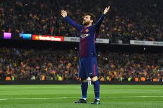
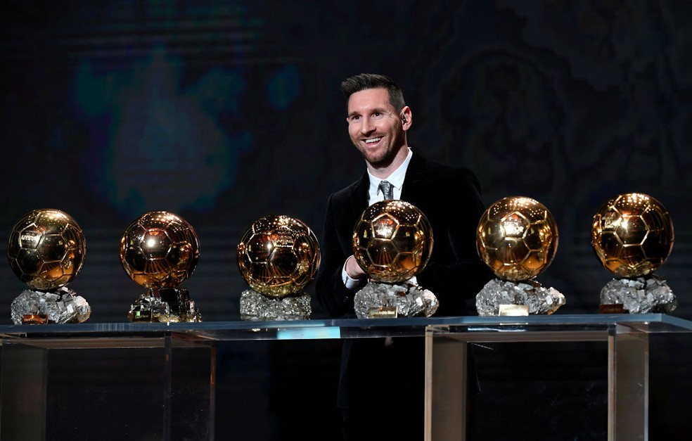

Voltar
Lionel Messi
Idade:34 anos
Jogador de futebol
Messi é frequentemente considerado o melhor jogador do mundo e na opinião da grande maioria dos especialistas do esporte, sua qualidade técnica, jogadas, velocidade, habilidade na perna esquerda, trabalho de equipe e extraordinária vocação para o gol, o tornam um dos melhores futebolistas de todos os tempos,com alguns ainda o colocando como o melhor jogador de sempre
Ele possui um recorde de seis Bolas de Ouro/Melhor Jogador do Mundo pela FIFA, quatro dos quais ele ganhou consecutivamente, um recorde de seis Chuteiras de Ouro, e em 2020 foi escalado no Dream Team da Bola de Ouro.
Passou toda a sua carreira profissional no Barcelona, onde é o maior goleador do clube e recordista de troféus, conquistando 35 troféus, incluindo dez títulos da La Liga (Campeonato Espanhol), quatro títulos da Liga dos Campeões da UEFA e sete Copas do Rei, entre outros
Conquistas na carreira:
- Gols:775
- Assistencias:305
- Bols de ouro:6
- Chuteira de ouro:6
- Titulos:36

